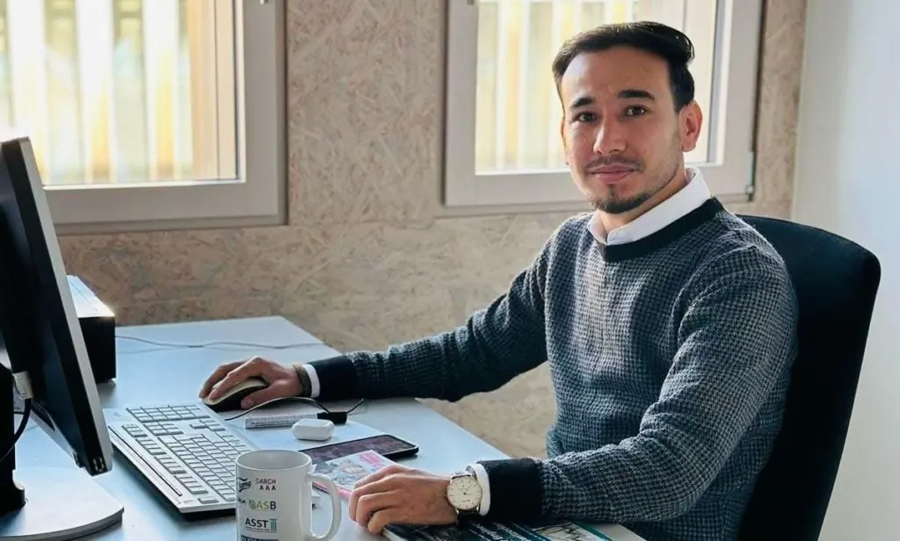
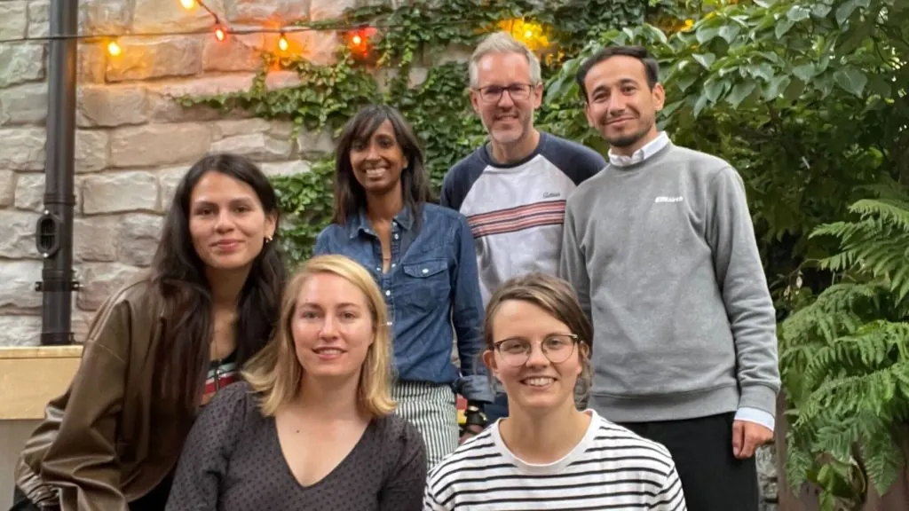
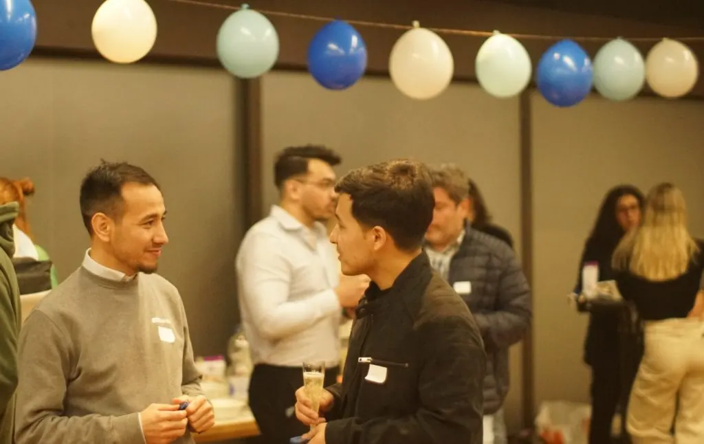
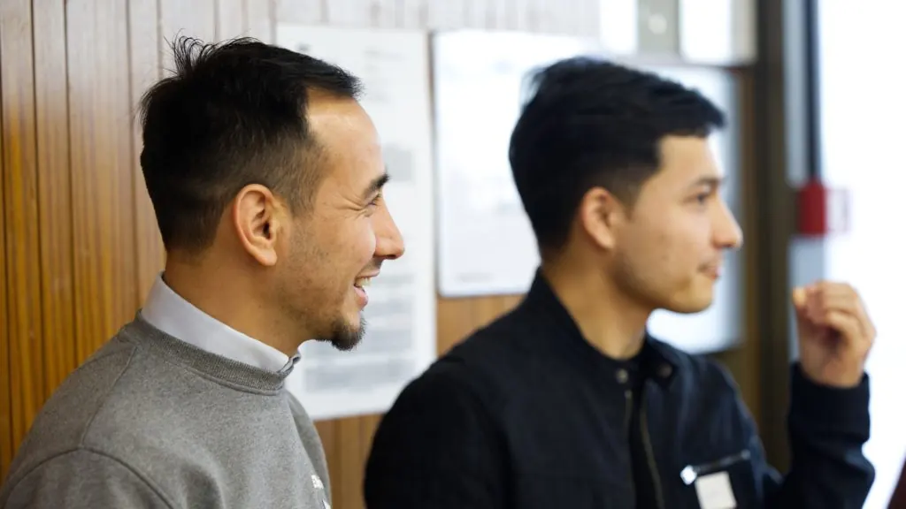
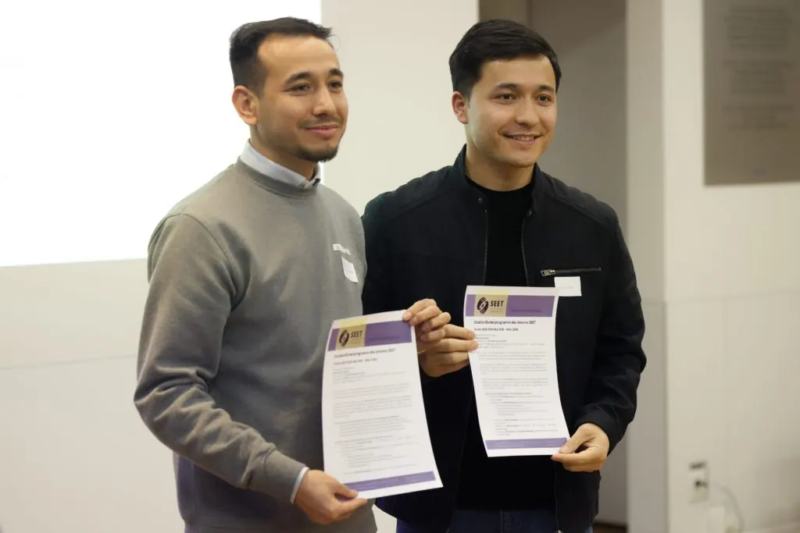

Eine kleine, aber bedeutungsvolle Möglichkeit, etwas zurückzugeben
A small but meaningful way to give back
Une façon modeste mais significative de donner en retour
SEET ist die einzige Organisation in der Schweiz, die Geflüchtete unabhängig von den Universitäten selbst beim Zugang zur Hochschulbildung unterstützt. Das Studienförderungs-Programm von SEET vernetzt Geflüchtete mit Mentorinnen und Mentoren, die sie wertvoll dabei unterstützen, sich im Schweizer Bildungssystem zurechtzufinden.
Wir haben mit Ahmadullah Hakimi gesprochen, um mehr über seine persönliche Motivation zu erfahren, SEET-Mentor zu werden.

Erzählen Sie uns ein wenig über sich selbst. Wie sieht Ihr persönlicher Bildungsweg aus und womit beschäftigen Sie sich derzeit?
Ich bin in Kabul, Afghanistan, aufgewachsen, wo meine schulische Laufbahn begann. Nachdem ich die nationale Hochschulaufnahmeprüfung (Kankor) mit 337 von 360 möglichen Punkten bestanden hatte, erhielt ich ein Stipendium des Indian Council for Cultural Relations (ICCR), um in Indien einen Bachelor-Abschluss in Bauingenieurwesen zu erwerben.
Nach meinem Abschluss kehrte ich 2020 nach Kabul zurück und arbeitete als Universitätsdozent, bevor ich 2021 ein Stipendium des Deutschen Akademischen Austauschdienstes (DAAD) erhielt, um einen Masterstudiengang in integrierter Wasserwirtschaft an der Deutsch-Kasachischen Universität in Kasachstan zu absolvieren.
Später führte mich das ETH4D-Stipendium an die ETH Zürich, wo ich meine akademische und wissenschaftliche Laufbahn weiter vorantrieb. Derzeit arbeite ich als wissenschaftlicher Forschungsassistent am Departement Umweltsystemwissenschaften (D-USYS) der ETH Zürich.
Da ich aus einem Land komme, in dem der Zugang zu Bildung oft erschwert war, und wo Mädchen und Frauen derzeit ihr Grundrecht auf Bildung verwehrt wird, hätte ich mir nie vorstellen können, dass mein Weg mich von Kabul zu einer Forschungsstelle an einer der weltweit führenden Universitäten führen würde.

Wann und wo sind Sie zum ersten Mal auf SEET und dessen Studienförderungsprogramm aufmerksam geworden?
Zum ersten Mal auf SEET und dessen Studienförderungsprogramm aufmerksam geworden bin ich bei einem monatlichen Mittagstreffen von ETH4D, bei welchem das SEET-Team das Programm und dessen Wirkung vorstellte.
Ich fand die Initiative sehr inspirierend und sie entsprach genau meinen eigenen Erfahrungen und Werten. Da ich selbst erlebt habe, wie Bildungsmöglichkeiten Leben verändern können, fühlte ich mich stark mit der Mission von SEET verbunden, was mich motivierte, mich als Mentor zu bewerben.
Welche Faktoren haben Sie dazu bewegt, sich als Mentor zu bewerben?
Nach dem Zusammenbruch der afghanischen Regierung im August 2021 waren viele gebildete Afghanen gezwungen, aus dem Land zu fliehen und ihr Leben in einer fremden Umgebung wie der Schweiz neu aufzubauen.
Hier traf ich Menschen in verschiedenen Phasen ihres Bildungsweges. Einige hatten ihr Bachelorstudium unterbrochen, während andere bereits einen Bachelor-, Master- oder sogar Doktorgrad erworben hatten. Trotz ihrer Qualifikationen und ihres Potenzials hatten viele Mühe, sich in einem neuen System zurechtzufinden und gleichzeitig die psychischen Herausforderungen der Vertreibung zu bewältigen, und manche sahen sich gezwungen, ihren Bildungsweg trotz der bereits erworbenen Abschlüsse neu zu beginnen.
Ich hatte den Eindruck, dass vielen dieser Menschen einfach die nötige Begleitung fehlte, um ihre Bildungsziele weiter zu verfolgen. Mir fiel auch auf, dass viele junge Menschen mit afghanischem Migrationshintergrund, einschliesslich der zweiten Generation, eine Hochschulausbildung nicht immer als realistische Option betrachten, da ihnen Vorbilder und Informationen über die verfügbaren Möglichkeiten fehlen.
Durch das SEET-Mentoring-Programm sehe ich dies als eine kleine, aber bedeutungsvolle Möglichkeit, etwas zurückzugeben, indem ich andere dabei unterstütze, fundierte Entscheidungen über ihre Bildungszukunft zu treffen. Ich glaube, dass Bildung Menschen in die Lage versetzt, einen positiven Beitrag zu ihrem Gastland zu leisten und ein umfassenderes Bild ihres Heimatlandes zu vermitteln, als es oft in den Medien dargestellt wird.
Könnten Sie uns ein wenig über Ihre Mentees erzählen, wie sich Ihre Beziehung entwickelt hat und welche Unterstützung Sie seit den Auftaktveranstaltungen, bei denen Sie sich zum ersten Mal getroffen haben, geleistet haben?
Mein Mentee (Azatullah) war einer der talentierten Studenten, die ein ICCR-Stipendium erhielten, um ihren Bachelor-Abschluss in Indien zu machen. Zufälligerweise studierten wir zur gleichen Zeit, wenn auch an verschiedenen Universitäten.
Nach seinem Abschluss arbeitete er als Beamter bei der Nationalen Statistik- und Informationsbehörde (NSIA) in Kabul, Afghanistan. Nach dem Zusammenbruch der Regierung war er gezwungen, aus dem Land zu fliehen, und liess sich schliesslich in Zürich in der Schweiz nieder. Durch SEET wurden wir bei der Auftaktveranstaltung wieder akademisch miteinander verbunden.
Schon bei unserem allerersten Treffen konnte ich sehen, wie enthusiastisch und entschlossen er war, seine Ausbildung in der Schweiz fortzusetzen. Seitdem habe ich ihn während des gesamten Bewerbungsprozesses unterstützt, indem ich Informationen weitergab, Unterlagen prüfte, Studienmöglichkeiten besprach und ihn ermutigte, wann immer Herausforderungen auftraten.
Azatullah blieb während des gesamten Prozesses proaktiv und engagiert, und seine harte Arbeit zahlte sich aus, als er an der Berner Fachhochschule zum Masterstudium zugelassen wurde. Er hat nun sein erstes Semester erfolgreich abgeschlossen.
An dem Tag, als ich von seiner Zulassung erfuhr, war ich genauso glücklich und stolz, als wäre ich selbst zugelassen worden. In den letzten zwei Jahren sind wir in engem Kontakt geblieben, und unsere Gespräche gingen weit über Bewerbungen und Studienangelegenheiten hinaus. Zu sehen, wie er diesen wichtigen Schritt auf seinem akademischen Weg gegangen ist, war eine der bedeutendsten Erfahrungen meiner Mentorentätigkeit und hat mich motiviert, auch weiterhin andere Studierende im Rahmen des SEET-Programms zu unterstützen.

Haben Ihre Erfahrungen als Mentor Ihre Erwartungen erfüllt oder waren sie sogar noch besser? Was haben Sie selbst aus dieser Erfahrung gelernt?
Um ehrlich zu sein, war meine Erfahrung als Mentor noch bereichernder, als ich erwartet hatte. Auch wenn das Mentoring natürlich mit Unsicherheiten und Herausforderungen verbunden ist, war es beruhigend zu wissen, dass das SEET-Team immer da war, wenn mein Mentee oder ich Rat oder Unterstützung brauchten.
Diese Mentoring-Erfahrung hat mir in zweierlei Hinsicht geholfen. Erstens konnte ich dadurch Kontakte zu anderen Mentoren und Mitgliedern des SEET-Teams knüpfen, von denen ich viel gelernt habe. Zweitens habe ich gelernt, dass anderen zu helfen nicht unbedingt bedeutet, Ratschläge zu geben oder Lösungen für ihre Probleme zu finden. Manchmal brauchen Menschen einfach nur jemanden, der ihnen zuhört und ihnen die Möglichkeit gibt, sich Gehör zu verschaffen.

An alle, die darüber nachdenken, sich als Mentor für den nächsten SEET-Programmzyklus zu bewerben: Würden Sie es weiterempfehlen, und wenn ja, könnten Sie bitte erklären, warum?
Zweifellos, ja. Wenn Sie darüber nachdenken, Mentor zu werden, würde ich Sie nachdrücklich dazu ermutigen, sich zu bewerben. Wir alle leben in einer Gesellschaft, in der unsere Leben miteinander verflochten sind, und es ist schwer, den Herausforderungen, denen sich die Menschen um uns herum gegenübersehen, gleichgültig gegenüberzustehen.
Mentoring ist eine sinnvolle Möglichkeit, einen Beitrag zu leisten – wenn auch nur einen kleinen -, indem man seine Zeit, seine Erfahrungen und seine Ermutigung mit jemandem teilt, der sich in einer wichtigen Lebensphase befindet.
Es ist auch eine Gelegenheit, bemerkenswerte Menschen kennenzulernen, deren Widerstandsfähigkeit und Entschlossenheit wirklich inspirierend sein können. Obwohl Mentoring Engagement erfordert, ist es die Erfüllung, die man empfindet, wenn man weiss, dass man vielleicht einen kleinen Teil zur Reise eines anderen beigetragen hat, die es zutiefst lohnenswert macht.
Ich möchte diese Gelegenheit nutzen, um dem SEET-Team für die Schaffung einer so bedeutungsvollen Initiative zu danken, die nicht nur einen Beitrag für das Gastland leistet, indem sie talentierten Menschen hilft, ihr Potenzial zu entfalten, sondern auch vielen Menschen dabei hilft, Träume weiterzuverfolgen, die in ihren Heimatländern unterbrochen wurden oder nicht mehr realisierbar waren.
Ich möchte auch allen engagierten Mentoren und Mentees meine Anerkennung aussprechen, deren Einsatz dieses Programm zu dem macht, was es ist.
Abschliessend hoffe ich von ganzem Herzen, dass eines Tages alle Menschen überall Zugang zu Bildung haben werden, insbesondere afghanische Mädchen und Frauen, denen dieses Grundrecht derzeit vorenthalten wird.

Wenn Sie daran interessiert sind, SEET als zukünftige:n Mentor:in, Spender:in, Partner:in oder Freiwillige:n zu unterstützen, senden Sie uns bitte eine E-Mail an: seet@seet.ch
SEET is the only organisation in Switzerland that supports refugees’ access to higher education, independently of universities themselves. SEET’s Study Support Program pairs refugees with mentors who provide invaluable support in navigating the Swiss system.
We spoke to Ahmadullah Hakimi to find out more about his personal motivation in becoming a SEET mentor.
Tell us a little bit about yourself. Your own personal study background, and what you are currently doing?
I grew up in Kabul, Afghanistan, where my educational journey began. After passing the National University Entrance Examination (Kankor) with a score of 337 out of 360, I received a scholarship from the Indian Council for Cultural Relations (ICCR) to pursue a bachelor’s degree in civil engineering in India.
After graduating, I returned to Kabul in 2020 and worked as a university lecturer before being awarded a Deutscher Akademischer Austauschdienst (DAAD) scholarship in 2021 to pursue a master’s degree in integrated water resources management at the German-Kazakh University in Kazakhstan.
Later, the ETH4D scholarship brought me to ETH Zurich, where I further advanced my academic and research journey. I am currently working as a Scientific Research Assistant in the Department of Environmental Systems Science at ETH Zurich.
Coming from a country where access to education has often been challenged and where girls and women are currently denied their fundamental right to education, I never imagined that my path would lead me from Kabul to conducting research at one of the world’s leading universities.
When and where did you first become aware of SEET, and its Study Support Programme?
I first became aware of SEET and its Study Support Programme during an ETH4D monthly lunch event, where the SEET team introduced the programme and its impact.
I found the initiative very inspiring and closely aligned with my own experiences and values. Having personally experienced how educational opportunities can transform lives, I felt a strong connection to SEET’s mission, which motivated me to apply to become a mentor.
What factors inspired you to apply to be a Mentor?
After the collapse of the Afghan government in August 2021, many educated Afghans were forced to flee the country and rebuild their lives in unfamiliar environments such as Switzerland.
Here, I met people at different stages of their educational journeys. Some had interrupted their bachelor’s studies, while others had already completed bachelor’s, master’s, or even PhD degrees. Despite their qualifications and potential, many struggled to navigate a new system while coping with the psychological challenges of displacement, and some felt compelled to restart their educational journeys despite the qualifications they had already earned.
I felt that many of these individuals simply lacked the guidance needed to continue pursuing their educational aspirations. I also noticed that many young people from Afghan migrant backgrounds, including the second generation, do not always see higher education as a realistic option because they lack role models and information about the opportunities available to them.
Through the SEET mentoring programme, I see this as a small but meaningful way to give back by supporting others in making informed decisions about their educational futures. I believe education enables people to contribute positively to their host country and to present a more complete picture of their home country than the one often seen in the media.
Could you tell us a little bit about your mentee, how your relationship has developed, and what support have you been providing since the kick-off events when you first met?
My mentee (Azatullah) was one of the talented students who received an ICCR scholarship to pursue his bachelor’s degree in India. By coincidence, we studied during the same period, although at different universities.
After graduation, he worked as an officer at the National Statistics and Information Authority (NSIA) in Kabul, Afghanistan. Following the collapse of the government, he was forced to flee the country and eventually settled in Zurich, Switzerland. Through SEET, we were reconnected academically at the kick-off event.
From our very first meeting, I could see how enthusiastic and determined he was to continue his education in Switzerland. Since then, I have supported him throughout the application process by sharing information, reviewing documents, discussing study options, and encouraging him whenever challenges arise.
Azatullah remained proactive and committed throughout the process, and his hard work paid off when he was admitted to the Bern University of Applied Sciences to pursue his master’s degree. He has now successfully completed his first semester.
The day I got to know about his admission, I felt as happy and proud as if I had been admitted myself. Over the past two years, we have stayed in close contact, and our conversations have extended beyond applications and university matters. Seeing him taking this important step in his academic journey has been one of the most meaningful experiences of mentoring and has motivated me to continue supporting other students through the SEET programme.
Have your Mentoring experiences met your expectations, or has it been better? What have you learned yourself from this experience?
To be honest, my mentoring experience has been even more enriching than I had anticipated. While mentoring naturally comes with uncertainties and challenges, it was reassuring to know that the SEET team was always there whenever my mentee or I needed guidance or support.
This mentoring experience benefited me in two ways. First, it allowed me to build connections with other mentors and members of the SEET team, from whom I learned a lot. Second, I learned that helping others does not necessarily mean giving advice or finding solutions to their problems. Sometimes, what people need most is simply someone who listens to them and gives them the opportunity to be heard.
To anyone considering applying to be a Mentor for the next SEET programme cycle, would you recommend it, and if so, could you please explain why?
Undoubtedly, yes. If you are considering becoming a mentor, I would strongly encourage you to apply. We all live in a society where our lives are interconnected, and it is difficult to remain indifferent to the challenges faced by those around us.
Mentoring is a meaningful way to contribute, even in a small way, by sharing your time, experiences, and encouragement with someone navigating an important stage of their life.
It is also an opportunity to meet remarkable individuals whose resilience and determination can be truly inspiring. Although mentoring requires commitment, the sense of fulfilment that comes from knowing you may have played a small part in someone else’s journey makes it deeply worthwhile.
I would like to take this opportunity to thank the SEET team for creating such a meaningful initiative, one that not only contributes to the host country by helping talented individuals realize their potential but also helps many people continue pursuing dreams that were interrupted or no longer possible in their home countries.
I would also like to express my appreciation to all the dedicated mentors and mentees whose commitment makes this programme what it is.
Finally, I sincerely hope that one day everyone, everywhere, will have access to education, especially Afghan girls and women, who are currently denied this fundamental right.
If you would be interested in supporting SEET as a future mentor, donor, partner or volunteer, please email us at: seet@seet.ch
SEET ist die einzige Organisation in der Schweiz, die Geflüchtete unabhängig von den Universitäten selbst beim Zugang zur Hochschulbildung unterstützt. Das Studienförderungs-Programm von SEET vernetzt Geflüchtete mit Mentorinnen und Mentoren, die sie wertvoll dabei unterstützen, sich im Schweizer Bildungssystem zurechtzufinden.
Wir haben mit Ahmadullah Hakimi gesprochen, um mehr über seine persönliche Motivation zu erfahren, SEET-Mentor zu werden.
Erzählen Sie uns ein wenig über sich selbst. Wie sieht Ihr persönlicher Bildungsweg aus und womit beschäftigen Sie sich derzeit?
Ich bin in Kabul, Afghanistan, aufgewachsen, wo meine schulische Laufbahn begann. Nachdem ich die nationale Hochschulaufnahmeprüfung (Kankor) mit 337 von 360 möglichen Punkten bestanden hatte, erhielt ich ein Stipendium des Indian Council for Cultural Relations (ICCR), um in Indien einen Bachelor-Abschluss in Bauingenieurwesen zu erwerben.
Nach meinem Abschluss kehrte ich 2020 nach Kabul zurück und arbeitete als Universitätsdozent, bevor ich 2021 ein Stipendium des Deutschen Akademischen Austauschdienstes (DAAD) erhielt, um einen Masterstudiengang in integrierter Wasserwirtschaft an der Deutsch-Kasachischen Universität in Kasachstan zu absolvieren.
Später führte mich das ETH4D-Stipendium an die ETH Zürich, wo ich meine akademische und wissenschaftliche Laufbahn weiter vorantrieb. Derzeit arbeite ich als wissenschaftlicher Forschungsassistent am Departement Umweltsystemwissenschaften (D-USYS) der ETH Zürich.
Da ich aus einem Land komme, in dem der Zugang zu Bildung oft erschwert war, und wo Mädchen und Frauen derzeit ihr Grundrecht auf Bildung verwehrt wird, hätte ich mir nie vorstellen können, dass mein Weg mich von Kabul zu einer Forschungsstelle an einer der weltweit führenden Universitäten führen würde.
Wann und wo sind Sie zum ersten Mal auf SEET und dessen Studienförderungsprogramm aufmerksam geworden?
Zum ersten Mal auf SEET und dessen Studienförderungsprogramm aufmerksam geworden bin ich bei einem monatlichen Mittagstreffen von ETH4D, bei welchem das SEET-Team das Programm und dessen Wirkung vorstellte.
Ich fand die Initiative sehr inspirierend und sie entsprach genau meinen eigenen Erfahrungen und Werten. Da ich selbst erlebt habe, wie Bildungsmöglichkeiten Leben verändern können, fühlte ich mich stark mit der Mission von SEET verbunden, was mich motivierte, mich als Mentor zu bewerben.
Welche Faktoren haben Sie dazu bewegt, sich als Mentor zu bewerben?
Nach dem Zusammenbruch der afghanischen Regierung im August 2021 waren viele gebildete Afghanen gezwungen, aus dem Land zu fliehen und ihr Leben in einer fremden Umgebung wie der Schweiz neu aufzubauen.
Hier traf ich Menschen in verschiedenen Phasen ihres Bildungsweges. Einige hatten ihr Bachelorstudium unterbrochen, während andere bereits einen Bachelor-, Master- oder sogar Doktorgrad erworben hatten. Trotz ihrer Qualifikationen und ihres Potenzials hatten viele Mühe, sich in einem neuen System zurechtzufinden und gleichzeitig die psychischen Herausforderungen der Vertreibung zu bewältigen, und manche sahen sich gezwungen, ihren Bildungsweg trotz der bereits erworbenen Abschlüsse neu zu beginnen.
Ich hatte den Eindruck, dass vielen dieser Menschen einfach die nötige Begleitung fehlte, um ihre Bildungsziele weiter zu verfolgen. Mir fiel auch auf, dass viele junge Menschen mit afghanischem Migrationshintergrund, einschliesslich der zweiten Generation, eine Hochschulausbildung nicht immer als realistische Option betrachten, da ihnen Vorbilder und Informationen über die verfügbaren Möglichkeiten fehlen.
Durch das SEET-Mentoring-Programm sehe ich dies als eine kleine, aber bedeutungsvolle Möglichkeit, etwas zurückzugeben, indem ich andere dabei unterstütze, fundierte Entscheidungen über ihre Bildungszukunft zu treffen. Ich glaube, dass Bildung Menschen in die Lage versetzt, einen positiven Beitrag zu ihrem Gastland zu leisten und ein umfassenderes Bild ihres Heimatlandes zu vermitteln, als es oft in den Medien dargestellt wird.
Könnten Sie uns ein wenig über Ihre Mentees erzählen, wie sich Ihre Beziehung entwickelt hat und welche Unterstützung Sie seit den Auftaktveranstaltungen, bei denen Sie sich zum ersten Mal getroffen haben, geleistet haben?
Mein Mentee (Azatullah) war einer der talentierten Studenten, die ein ICCR-Stipendium erhielten, um ihren Bachelor-Abschluss in Indien zu machen. Zufälligerweise studierten wir zur gleichen Zeit, wenn auch an verschiedenen Universitäten.
Nach seinem Abschluss arbeitete er als Beamter bei der Nationalen Statistik- und Informationsbehörde (NSIA) in Kabul, Afghanistan. Nach dem Zusammenbruch der Regierung war er gezwungen, aus dem Land zu fliehen, und liess sich schliesslich in Zürich in der Schweiz nieder. Durch SEET wurden wir bei der Auftaktveranstaltung wieder akademisch miteinander verbunden.
Schon bei unserem allerersten Treffen konnte ich sehen, wie enthusiastisch und entschlossen er war, seine Ausbildung in der Schweiz fortzusetzen. Seitdem habe ich ihn während des gesamten Bewerbungsprozesses unterstützt, indem ich Informationen weitergab, Unterlagen prüfte, Studienmöglichkeiten besprach und ihn ermutigte, wann immer Herausforderungen auftraten.
Azatullah blieb während des gesamten Prozesses proaktiv und engagiert, und seine harte Arbeit zahlte sich aus, als er an der Berner Fachhochschule zum Masterstudium zugelassen wurde. Er hat nun sein erstes Semester erfolgreich abgeschlossen.
An dem Tag, als ich von seiner Zulassung erfuhr, war ich genauso glücklich und stolz, als wäre ich selbst zugelassen worden. In den letzten zwei Jahren sind wir in engem Kontakt geblieben, und unsere Gespräche gingen weit über Bewerbungen und Studienangelegenheiten hinaus. Zu sehen, wie er diesen wichtigen Schritt auf seinem akademischen Weg gegangen ist, war eine der bedeutendsten Erfahrungen meiner Mentorentätigkeit und hat mich motiviert, auch weiterhin andere Studierende im Rahmen des SEET-Programms zu unterstützen.
Haben Ihre Erfahrungen als Mentor Ihre Erwartungen erfüllt oder waren sie sogar noch besser? Was haben Sie selbst aus dieser Erfahrung gelernt?
Um ehrlich zu sein, war meine Erfahrung als Mentor noch bereichernder, als ich erwartet hatte. Auch wenn das Mentoring natürlich mit Unsicherheiten und Herausforderungen verbunden ist, war es beruhigend zu wissen, dass das SEET-Team immer da war, wenn mein Mentee oder ich Rat oder Unterstützung brauchten.
Diese Mentoring-Erfahrung hat mir in zweierlei Hinsicht geholfen. Erstens konnte ich dadurch Kontakte zu anderen Mentoren und Mitgliedern des SEET-Teams knüpfen, von denen ich viel gelernt habe. Zweitens habe ich gelernt, dass anderen zu helfen nicht unbedingt bedeutet, Ratschläge zu geben oder Lösungen für ihre Probleme zu finden. Manchmal brauchen Menschen einfach nur jemanden, der ihnen zuhört und ihnen die Möglichkeit gibt, sich Gehör zu verschaffen.
An alle, die darüber nachdenken, sich als Mentor für den nächsten SEET-Programmzyklus zu bewerben: Würden Sie es weiterempfehlen, und wenn ja, könnten Sie bitte erklären, warum?
Zweifellos, ja. Wenn Sie darüber nachdenken, Mentor zu werden, würde ich Sie nachdrücklich dazu ermutigen, sich zu bewerben. Wir alle leben in einer Gesellschaft, in der unsere Leben miteinander verflochten sind, und es ist schwer, den Herausforderungen, denen sich die Menschen um uns herum gegenübersehen, gleichgültig gegenüberzustehen.
Mentoring ist eine sinnvolle Möglichkeit, einen Beitrag zu leisten – wenn auch nur einen kleinen -, indem man seine Zeit, seine Erfahrungen und seine Ermutigung mit jemandem teilt, der sich in einer wichtigen Lebensphase befindet.
Es ist auch eine Gelegenheit, bemerkenswerte Menschen kennenzulernen, deren Widerstandsfähigkeit und Entschlossenheit wirklich inspirierend sein können. Obwohl Mentoring Engagement erfordert, ist es die Erfüllung, die man empfindet, wenn man weiss, dass man vielleicht einen kleinen Teil zur Reise eines anderen beigetragen hat, die es zutiefst lohnenswert macht.
Ich möchte diese Gelegenheit nutzen, um dem SEET-Team für die Schaffung einer so bedeutungsvollen Initiative zu danken, die nicht nur einen Beitrag für das Gastland leistet, indem sie talentierten Menschen hilft, ihr Potenzial zu entfalten, sondern auch vielen Menschen dabei hilft, Träume weiterzuverfolgen, die in ihren Heimatländern unterbrochen wurden oder nicht mehr realisierbar waren.
Ich möchte auch allen engagierten Mentoren und Mentees meine Anerkennung aussprechen, deren Einsatz dieses Programm zu dem macht, was es ist.
Abschliessend hoffe ich von ganzem Herzen, dass eines Tages alle Menschen überall Zugang zu Bildung haben werden, insbesondere afghanische Mädchen und Frauen, denen dieses Grundrecht derzeit vorenthalten wird.
Wenn Sie daran interessiert sind, SEET als zukünftige:n Mentor:in, Spender:in, Partner:in oder Freiwillige:n zu unterstützen, senden Sie uns bitte eine E-Mail an: seet@seet.ch